To publish and run Fuse SwitchYard projects on an installed EAP server, you must first:
Install JBoss Fuse on the JBoss EAP server
For details, see Installation of JBoss Fuse on JBoss EAP
Add the server and its runtime definition to the tooling's Servers list
Once added to the list, the server appears in the Servers view, where you can configure it, start and stop it, and publish projects to it.
You can publish SwitchYard projects to Red Hat JBoss Enterprise Platform 6.4 and newer servers that you have defined and added to the Servers list.
![[Note]](imagesdb/note.png) | Note |
|---|---|
If you haven't already installed a server, you can do so when you define and add it to the Servers list. |
You can add a new server to the Servers view in three ways:
In Servers view, click the link No servers are available. Click this link to create a new server....
Note This link appears in Servers view only when no server has been defined.
Right-click in Servers view to open the context menu, then select > .
On the menu bar, select > > > > .
In the Define a New Server dialog, select
Red Hat JBoss Enterprise Application Platform 6.1+.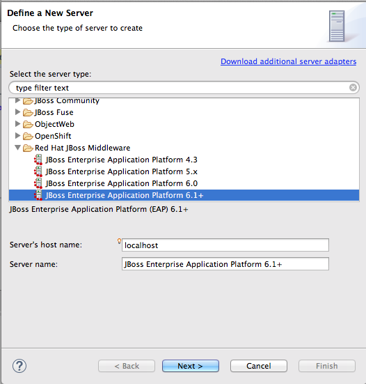Server's host name and Server name are auto filled by default. In Server name, you can enter a different name to use to identify the server in the Servers view.
Click to open the Create a New Server Adapter page.

To specify that the server life-cycle is managed from outside the tooling, check Server is externally managed. Assume server is started..
If you have not configured a runtime before, Create new runtime (next page) appears on the drop-down menu bar under The selected profile requires a runtime (as shown in the figure above). Otherwise, a previously configured runtime appears on the drop-down menu bar.
Note You can assign the same runtime to multiple server instances, which enables you to quickly launch a server in debug mode or to configure other runtime settings.
To use a previously created runtime with this server, click the drop-down menu and select it from the list (skip to Step 6).
To create a new runtime, select Create new runtime (next page) from the list.
Click to open the JBoss Runtime page.
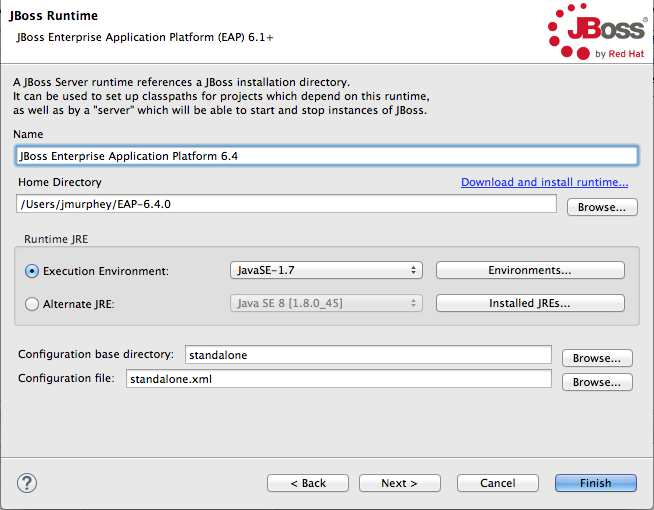Note If the server is not already installed on your machine, you can install it now by clicking the link Download and install runtime... and following the site's download instructions. Depending on the site, you may be required to provide valid credentials before you can continue the download process.
Configure the JBoss runtime:
Accept the default for Name, or enter a different name.
In Home Directory, enter the path where the server runtime is installed, or click to find and select it.
Select the runtime JRE from the drop-down menu next to Execution Environment.
If the version you want does not appear on the list, click , and then select the version from the list. The JRE version you select must be installed on your machine.
Accept the defaults for Configuration base directory and Configuration file, or browse to the directory where the
.xmlconfiguration file to use is located.
Click .
The server appears in the Servers view.
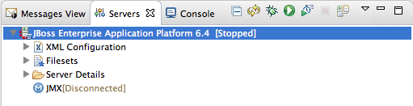
The JBoss Fuse on JBoss EAP installer installs the SwitchYard quickstarts in
$EAP_HOME/quickstarts/switchyard/
Right-click in Project Explorer, and select > to open the Choose Import source dialog.

In the Maven folder, select Existing Maven Projects.
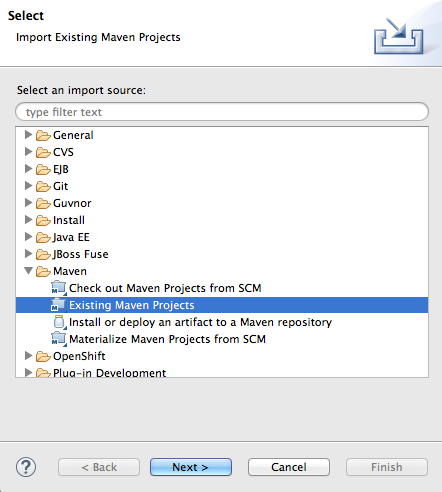Click to open the Select Maven projects dialog.

Click the button next to the Root Directory field to locate and select the
$EAP_HOME/quickstarts/switchyard/bean-service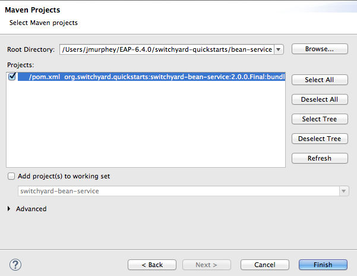In the Projects pane, make sure the
pom.xmlfile entry for theswitchyard-bean-serviceis selected.Click to start the import.
The
switchyard-bean-serviceproject appears in Project Explorer.Wait a moment for the import process to finish.
Before you try to publish your project to a server, it's useful to confirm that it builds and runs locally. The provided test files included with each SwitchYard quickstart are complete and comprehensive and need no modification.
In Project Explorer, expand the
switchyard-bean-serviceproject to exposesrc/test/java/OrderServiceTest.javafile.If you want to take a look at the test code, double-click the file to open it in the Java editor.
In Project Explorer, right-click the
OrderServiceTest.javafile to open the context menu, and select > .Console view automatically opens and displays the log entries generated by the JUnit test.
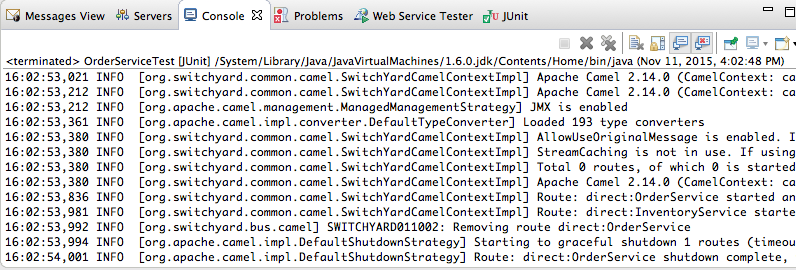These log entries indicate that the test ran successfully against Apache Camel as expected.
Click the JUnit tab to open JUnit view.
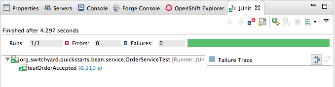This test proves that the
switchyard-bean-servicesuccessfully builds and runs locally.
You can publish a project to a supported EAP server, defined and listed in the Servers view, whether it's running or not. A published project will run as scheduled according to the server's settings (for details, see (Publishing Fuse Integration Projects to a Server).
![[Important]](imagesdb/important.png) | Important |
|---|---|
The EAP server must have JBoss Fuse on JBoss EAP installed on it. For details, see Installation of JBoss Fuse on JBoss EAP |
In the Servers view, select the EAP 6.4 server you just added, and click
 on the menu bar to start it.
on the menu bar to start it.In the Servers view, right-click the server to open the context menu, and select .
When a project is ready for publishing, it appears in the Available column.
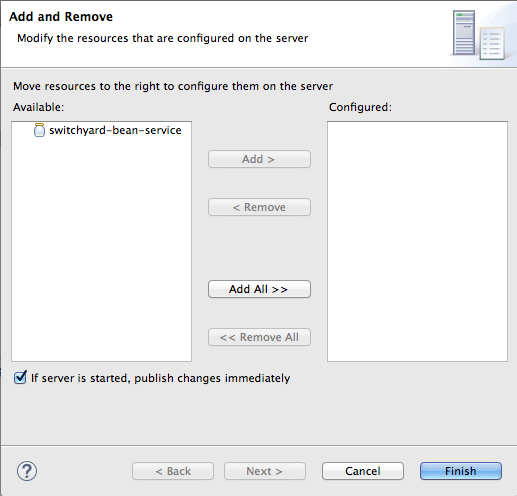Note The option If server is started, publish changes immediately is enable by default. See Publishing Fuse projects automatically when resources change for information on how this option works and on using other publishing options.
Double-click the project in the Available column to move it to the Configured column.
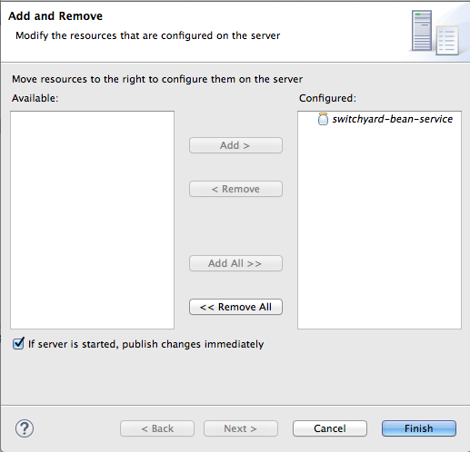Click .
Once publishing has finished, the project appears as a node under the server runtime node in the Servers view.
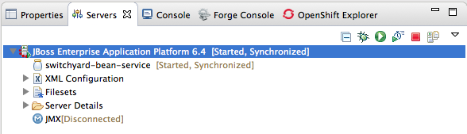Servers view shows that both the server runtime and the project are started and synchronized.
Note For a server runtime, Synchronized means that all published resources on the server are identical to their local counterparts. For a published resource, Synchronized means that it is identical to its local counterpart.
Look at the log output in Console view to confirm that the
switchyard-bean-serviceproject is deployed and running: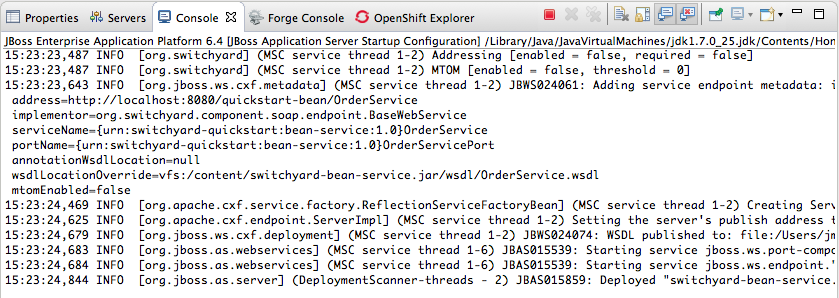
You can use the JBoss Web Service Tester tool to test your published web service.
From the log output in Console view, copy the address of the
bean-serviceproject'sOrderService.In the example we are using, the address is
http://localhost:8080/quickstart-bean/OrderService.Open a browser, and paste the address of the
OrderServicein the browser's address field.Add
?wsdlto the end of the address, so it readshttp://localhost:8080/quickstart-bean/OrderService?wsdl.Press Enter.
The browser displays the WSDL for the
OrderService: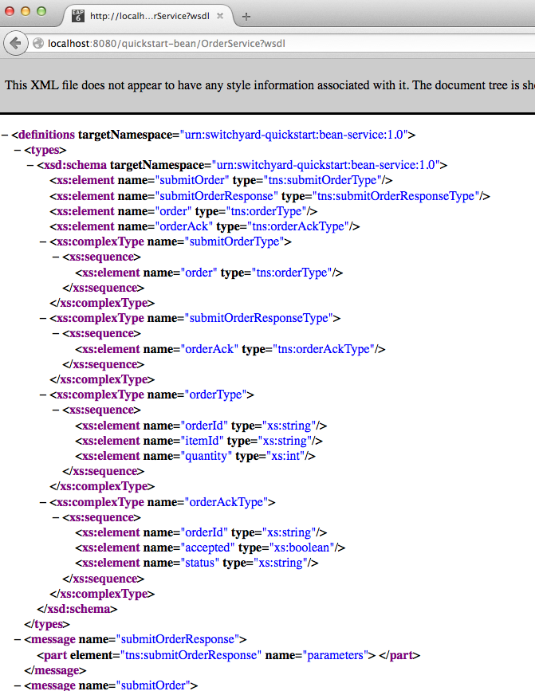Copy the URL in the browser's address field.
In JBoss Developer Studio, click > > , then scroll down to the JBoss Tools Web Services folder, and select .

Click the drop-down menu labeled , and select .

The Request Body pane displays an example SOAP request message.
Click
 next to
next to  to open the Specify the Source WSDL for the Web
Service dialog, then paste the URL you copied in Step 5 into the
WSDL URI field.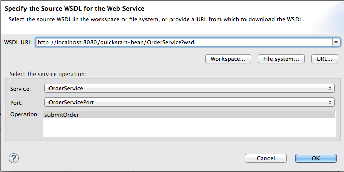
to open the Specify the Source WSDL for the Web
Service dialog, then paste the URL you copied in Step 5 into the
WSDL URI field.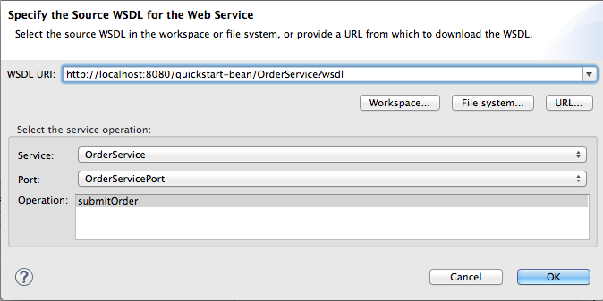The Web Service Tester auto fills the remaining fields with the data retrieved from the WSDL.
Click .
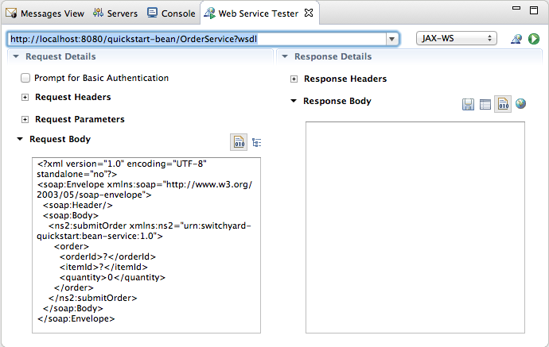The Web Service Tester displays the XML request message retrieved from the WSDL in the Request Body pane.
You can enter values for the
<order>items<orderId>,<itemId>, and<quantity>to test the project's request and response services.Note You can discover what the data types are for each order item. In Project Explorer, double-click
src/test/java/OrderServiceTest.javafile to open it in the Java editor:
In the Request Body pane, click the value field of each order item and enter an appropriate value for it. For example:
For <orderID>, replace
?withORDER10For <itemId>, replace
?withBUTTERFor <quantity>, replace
0with1000
Click
to the right of to invoke the submitOrder operation. and
populate the Response Body pane with an example response
message.Console view automatically opens to display the status of the submitOrder operation like this—
... INFO [stdout] (http-localhost/127.0.0.1:8080-2) |--- Validating Order object: [OrderID=ORDER10, ItemID=BUTTER, quantity=1000] ---| ... INFO [stdout] (http-localhost/127.0.0.1:8080-2) |--- Validating OrderAck object: [OrderID=ORDER10, accepted=true, status=Order Accepted [intercepted]] ---|—at the end of the Console output.
Switch to the Web Service Tester tool and check the response message in the Response Body pane.
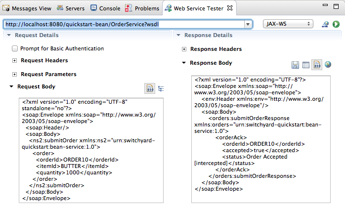